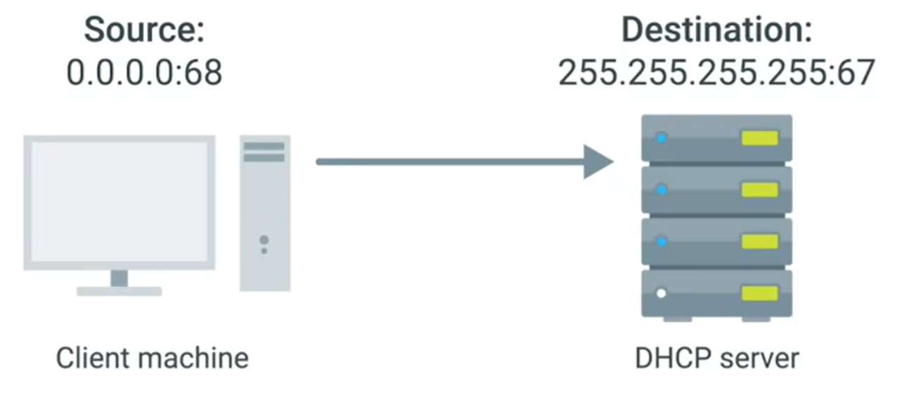

DHCP discovery - the process by which a client that uses DHCP attempts to get network configuration.
discovery has 4 steps:
1. server discovery msg (DHCPDISCOVER) - the client sends DHCP discovery messege to the network
since the client doesnt have an IP and doesnt knows the DHCP server IP - is sends a broadcast

the broadcast UDP segment source port is 68 and destinaiton 67 is encapsulated in IP datagram originating 0.0.0.0 and broadcast destination.
the DHCP server examines the request and its own configuration to decide what IP (if any) to allocate
2. IP offer (DHCPOFFER) - offer msg on broadcast as described in img.
the offer is made on broadcast but contains destination MAC ad

the client can accept or decline the offer (declining is rare, yet possible in cases that many DHCP servers are running on the network and the client is configured to accept IP in certain range)
3. client responds with DHCPREQUEST - since the ip hasent been set it takes the same form of the DISCOVER
4. the DHCP server will respond ACK (acknolegment msg) containing the client MAD ad
the client can now use the configuration sent to him
all this process is known as DHCP Lease - it has expiry
a client will relase its lease when he disconnects from a network